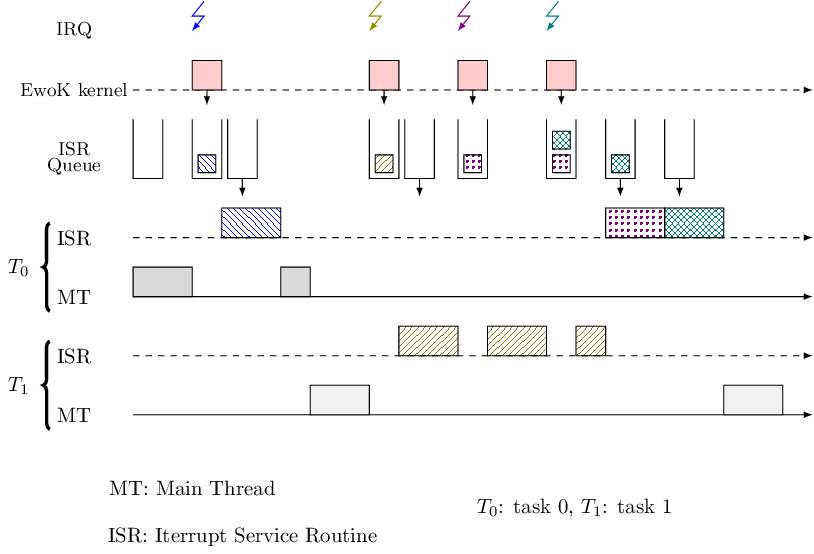

5.4.3. EwoK IRQ and ISR internals¶
5.4.3.1. ISR mechanism¶
Some hardware devices such as the smart card generate interrupts that must be acknowledged within a very tight time frame to avoid timeouts. Other components like the touch screen put pressure on the kernel with interrupts bursts. To deal with these constraints, we designed a simple yet effective system to quickly acknowledge interrupts and to limit as much as possible the overhead of the user mode drivers.
In EwoK, a driver is typically composed of a main thread, which implements all the driver logic, and one or several Interrupt Service Routine (ISR) to handle the hardware interrupts. ISRs execution takes place in user mode, with the associated task permissions and memory layout.
Usually, a user ISR performs only two things: it acknowledges the hardware by reading or writing in some registers and it sets some variables or some shared structures to signal to the main thread that an event happened.
It should be highlighted that a user ISR is scheduled with the highest priority. As a consequence, it must be fast enough to avoid hindering treatment of subsequent hardware interrupts.
5.4.3.2. ISR postponing¶
When a hardware interrupt is triggered, the kernel traps it and checks if it must be handled by a user task. If this is the case, the kernel updates a queue structure, managed by the so-called softirq module, so that the related user ISR can be scheduled afterward. If an interrupt is triggered while a user ISR is already executing, this interrupt is not lost thanks to the softirq queueing mechanism that defers its treatment.
In this design, user ISRs are executed asynchronously. A potential problem is the induced latency in the handling of hardware interrupts.
{kind=link}
Previous figure describes a typical scheduling scheme during an IRQ burst. The posthook mechanism has been introduced to address this issue.
5.4.3.3. Posthooks¶
Posthook instructions define a restricted high level language that allows to read or to set some bits in specific hardware registers when an interrupt occurs. For each kind of interrupt, a driver can use such posthook instructions, that are synchronously interpreted and executed by the kernel, in order to quickly acknowledge hardware interrupts.